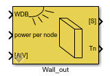
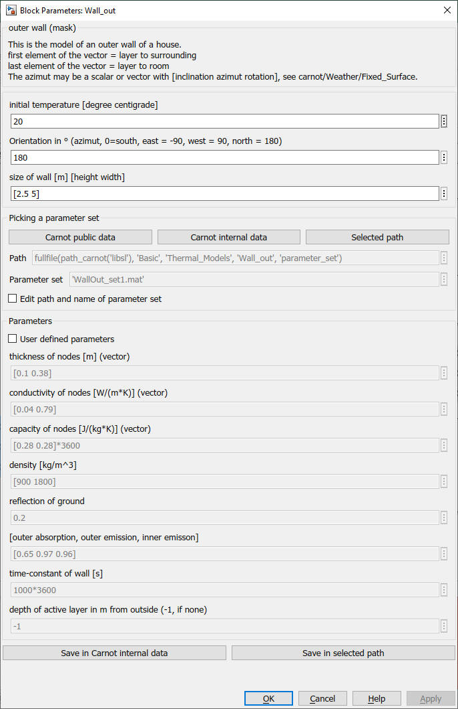

Wall_out
Path: CARNOT/Basic/Thermal_Models
Purpose
Models for
the outer wall of a house.
Description
Mechanism of heat transfer
Each outward-facing structural component, such as walls and windows, is subject to three temperature-exchange mechanism as it interacts with the outside environment.
Absorption of short wave solar radiation The transformation of short-wave solar energy on the facade into heat power QT depends upon the absorption-coefficient of the given surface a in the range [0 ... 1]:
QT = a*IT [W/m2]
Solar-radiation that penetrates into the building through windows is absorbed 100% by floor, which in turn transfers the energy via the radiative node to all other structures.
Heat transfer
The block uses the heat transfer models :
alfa_wall_out for heat transfer from and to the outdoor ambient
alfa_wall_in for heat transfer from and to the room node
Thermal conduction
See Wall_basic for details of the model.
Inputs
power per (active) node in W
AIB : Air Infiltration and Ventilation Bus
Outputs
Sdat : Bus with the power balance for the room node and evaluation
Tnodes - Vector with the surface temperature and the temperature(s) of the active node(s)
Validation
The model
has been compared to
the results given by Feist (Feist 1994) and to the measured and calculated data
of the SOPASIM-project (Balters 1995). Comparison to measurements has also been
done with data from a project in Argentina (Mueller 1999).
Example the block is used in "room_radiator" and "room_floor_heating" see housetest.mdl
Literature:
Balters, E., Lehmann, H., Schaub, A.: SOPASIM - Test weit verbreiteter
Solar-Passiv- Simulationssysteme für Architekten, Abschlussbericht, UHL Data,
Herzogstr. 27, Aachen, Arbeitsgemeinschaft Solar Nordrhein-Westfalen, 1995
Feist, W.: Thermische Gebäudesimulation - Kritische Prüfung unterschiedlicher
Modellansätze, Verlag C.F.Müller, Heidelberg, 1994
Kasten, F. Strahlungsaustausch zwischen Oberflächen und Atmosphäre,
VDI-Bericht, Nr. 721, 131-158, Düsseldorf, 1989
Mueller, C.: Diplomarbeit University of Karlsruhe, 1999
Recknagel-Sprenger-Schramek: Taschenbuch für Heizung + Klimatechnik, R.
Oldenbourg Verlag München Wien, 1995
VDI-Wärmeatlas, Berechnungsblätter für den Wärmeübergang, 7. Auflage, VDI
Verlag GmbH, Düsseldorf, 1994
Parameters and Dialog Box

Azimut of the window is 0° for
south, -90° for east, +90° for west and +180° for north.
You may enter a vector of 2 elements for the azimut where the first element is
the azimit and the second the inclination. Inclination of 90° is vertical.
You may directly choose predefined parameter sets. For details see chapter 2.2.1 Choosing parameter sets for configurated models
Characteristics
Direct Feedthrough Yes
Sample
time
Inherited
from driving block
States
corresponding
to the number of nodes
Vectorized
No